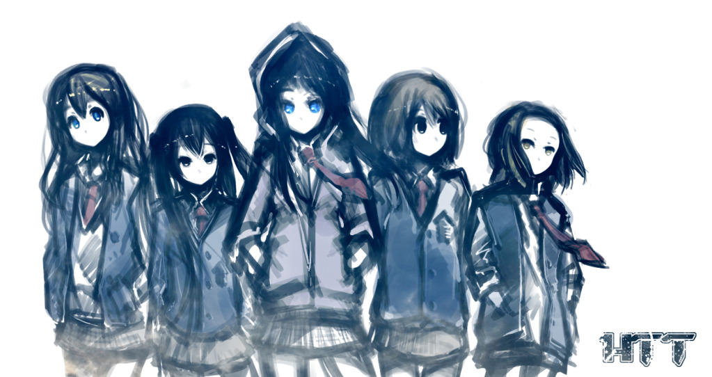
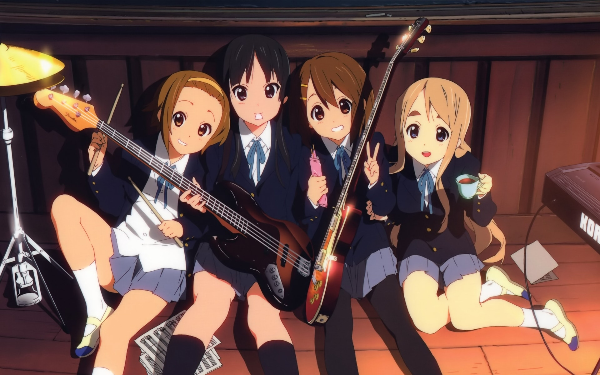

5月13号，B站买回轻音后我也是把这部动画又看了一遍，我也不知道这是我看的第几遍了，轻音是我唯一一个多刷了的动画。直到我写这篇文章的时候为止，轻音少女在B站第一季播放数量为237.7万，第二季为120.1万，剧场版21.7万。因为限时免费的时间很短，现在已经开启了大会员观看，所以播放量的增幅也就降了下来。即便是这样也不难看出轻音的再放送掀起了多大的波澜。
《K-ON》是由kakifly制作芳文社出版的漫画，最近的一部作品是2018年开始连载的《K-ON！轻音部Shuffle》。而同名的《轻音少女》则是京都动画在2009年放送的，其画风与原作截然不同，不得不佩服京阿尼的魔改。
《K-ON》是由kakifly制作芳文社出版的漫画，最近的一部作品是2018年开始连载的《K-ON！轻音部Shuffle》。而同名的《轻音少女》则是京都动画在2009年放送的，其画风与原作截然不同，不得不佩服京阿尼的魔改。
《轻音少女》制作时，在其内部地位并不高，第一季动画短短的14集中就压缩进了很多内容，剧情上流程走的快，少了很多能够展开的内容。虽然流程快，但是却一点都没有给人一种很赶的感觉。它制作团队包括导演山田尚子老师和声优们，在当时算是新人级别的，再加上原作《K-ON》本身就没有多少热度，这部《轻音少女》可以说是拿给新人练手的，也顺便试试新的作画风格。《轻音少女》的绘画和当时的主流画风不同，当时的动画在线条勾勒和着色方面下手重，而轻音用了写实的画风，圆润的线条和写实的配色给了观众一种更加生动活力的感觉。让京阿尼没想到的是，自己都没看重的“新人练手”为动画界打开了新篇章。
